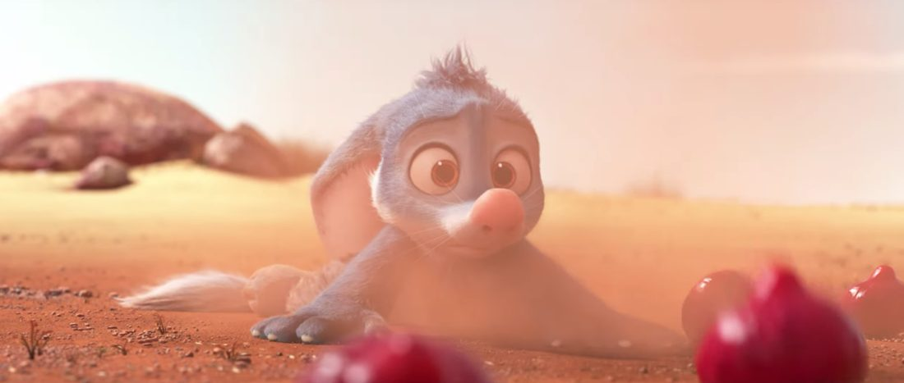
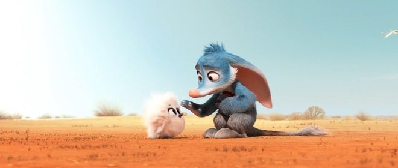

Мнение о мультфильме
Судя по кадрам, это добрая история о заботе, с красивой картинкой и живыми героями. Короткий мультфильм, который стоит посмотреть.
Персонажи

Билби
Осторожный и сдержанный одиночка, который становится защитником и опекуном.

Птенец
Маленький, пушистый и доверчивый. Его появление меняет привычную жизнь Билби.
Сюжет
- IЗнакомствоБилби находит птенца на зелёном мысе у моря.
- IIПустыняГерои идут по раскалённой земле среди сухих деревьев.
- IIIОпасностиПауки, скорпионы, динго и крокодилы встречаются на пути.
- IVВозвращение к морюПуть заканчивается на скале с красными ягодами, где появляется большая белая птица.